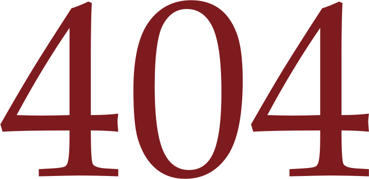
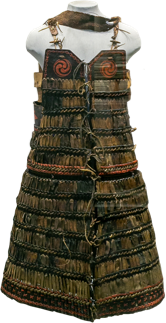
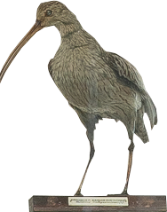
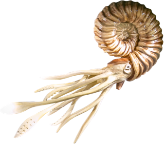
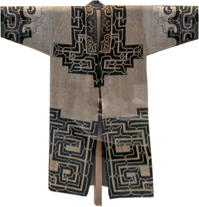

Айнские доспехи
Доспехи сарафанного типа изготовлялись из кожи лахтака («морского зайца» — вид большого тюленя). На вид такой доспех может казаться громоздким, но на деле практически не стесняет движений, позволяет свободно сгибаться и приседать.

Птица
Доспехи сарафанного типа изготовлялись из кожи лахтака («морского зайца» — вид большого тюленя). На вид такой

Айнские доспехи
Очень забавный молюск

Айнские доспехи
Доспехи сарафанного типа изготовлялись из кожи лахтака («морского зайца» — вид большого тюленя). На вид такой доспех может казаться громоздким, но на деле практически не стесняет движений, позволяет свободно сгибаться и приседать.